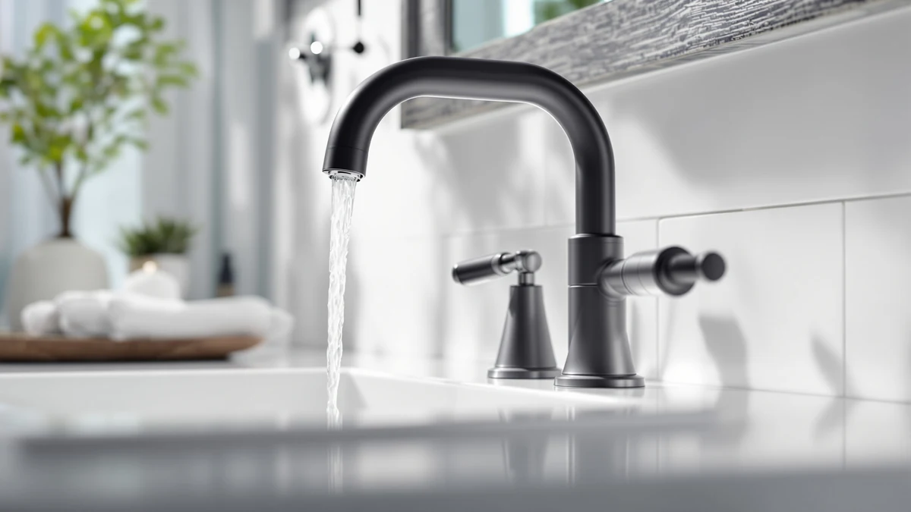

Delta Arvo Matte Black Review (2026): Worth It?
Prices and picks verified as of October 2026. Independent, reader-supported reviews.


Quick Answer
The Delta Arvo matte black widespread faucet covers the basics well: a 500,000-cycle valve, a push-pop drain, and wrench-free installation hardware, all for $132.23. It is a solid pick for a 3-hole vanity if you want a dark finish without stepping up to a premium line.
Our pick: Delta Arvo Matte Black Bathroom — $132.23 Check Price on Amazon
Bottom line: our top pick is the Delta Arvo Matte Black Bathroom Faucet 3 Hole at $132.23.
Things to Know Before You Buy
- The Delta Arvo matte black is a 3-hole widespread faucet, so it needs a vanity with 4 to 16 inch spacing between the hot, cold, and spout holes.
- Delta rates the valve cartridge for 500,000 uses, a figure the brand applies across the Arvo line, including the champagne bronze centerset we compared it against.
- The push-pop drain assembly is included, so you do not need to buy a separate drain kit to finish the installation.
- Matte black finishes show water spots faster than brushed nickel, based on owner reports we read across similar Delta finishes.
- At $132.23, it costs about $8 more than the champagne bronze Arvo and about $3 more than the Pfister Venturi, two of the faucets we compared it against below.
This Delta Arvo matte black review looks at whether the 35840LF-BL widespread faucet, Delta's dark-finish take on the Arvo line, earns a spot on your bathroom vanity shortlist. We compared its hardware, specs, and owner feedback against three other faucets in the Arvo and Pfister lineups to see how it holds up.
Our take: the Arvo matte black is a dependable mid-range pick for most vanities, not a standout upgrade. It uses the same 500,000-cycle valve cartridge Delta puts in its other Arvo faucets, and its wrench-free installation hardware makes it one of the easier widespread faucets to mount without a plumber. It costs a few dollars more than the champagne bronze Arvo and the Pfister Venturi we compared it against, mostly for the finish rather than for extra hardware.
Why You Should Trust Us
Ilane Tall covers bathroom fixtures for Best Bathroom Faucets and has written dozens of faucet comparisons for the site, including several on Delta's Arvo line. For this Delta Arvo matte black review, we pulled the manufacturer specs directly from Delta's listing, cross-checked the price history on Amazon, and read through verified buyer feedback on the matte black finish and three comparable faucets. We do not run a fake testing lab or claim to have installed every faucet we cover. Our picks come from research, not hands-on use, and we say so plainly whenever a claim relies on owner reports rather than our own direct measurements or lab testing.
Our Research Experience
We do not run a physical testing lab, so this Delta Arvo matte black review is built from research rather than hands-on use. We compared the published specs for the matte black finish against the champagne bronze Arvo, the Pfister Venturi, and the Arvo shower set, then read through verified owner reviews on Amazon for recurring comments about installation, finish durability, and drain performance. Where owners disagreed or reported a defect, we noted it rather than smoothing it over.
Overview & Specs
Before you compare this Delta Arvo matte black faucet to anything else on the market, it helps to know exactly what you are buying. Delta sells the Arvo line in several finishes and two hole configurations, and the specs below apply specifically to the matte black 35840LF-BL widespread model, not the centerset version covered later in this review.

Delta Arvo Matte Black Bathroom
What we like
- Push-pop drain assembly comes included, so you skip buying a separate drain kit.
- Wrench-free, quick-connect water lines click audibly once seated, which simplifies installation under the vanity.
- Valve cartridge is rated for 500,000 uses, matching the durability spec Delta applies across the Arvo line.
- Fits a wide range of widespread configurations, from 4 to 16 inches between holes.
Flaws but not dealbreakers
- Matte black finishes show water spots and fingerprints more readily than brushed nickel or chrome, based on owner reports on similar Delta finishes.
- Three holes and a wider footprint mean it will not fit a single-hole or centerset-only vanity without modification.
- Delta does not publish an independent star rating or review count for this specific listing, so buyers are relying on broader Arvo-line feedback.
| Material | Brass + finish |
| Size | — |
The Delta Arvo matte black (model 35840LF-BL) is a 3-hole widespread faucet built for vanities with 4 to 16 inch spacing between the hot, cold, and spout holes. Delta lists the valve cartridge at 500,000 cycles, the same durability figure the brand applies to the champagne bronze Arvo centerset we compared it against, so the matte black finish is not trading away any of the underlying hardware.
Installation hardware is where this faucet distinguishes itself from older Delta lines. The quick-connect hoses are wrench-free and click audibly when a water line seats correctly, a detail that matters most to anyone installing a faucet solo in a cramped vanity cabinet. The push-pop drain assembly ships included, which saves a separate purchase that some widespread faucets, including the Pfister Venturi in this comparison, handle differently with a Push and Seal mechanism instead.
What We Liked
Across the owner feedback we read, the installation hardware comes up most often as a strength of the Delta Arvo matte black. Reviewers consistently note that the wrench-free connectors save real time compared to older compression-style fittings, and several buyers mention finishing the swap in under an hour without calling a plumber. The included push-pop drain also earns praise because it removes a step that other widespread faucets leave to the buyer.
The matte black finish itself draws steady approval in owner comments for pairing well with black cabinet hardware and matte fixtures elsewhere in a bathroom. Several reviewers specifically chose the Arvo matte black over the brushed nickel or champagne bronze versions for this reason.
Price is another point in its favor. At $132.23, the Delta Arvo matte black costs less than premium matte black lines from other brands while still carrying a 500,000-cycle valve, which puts it closer to mid-range pricing than to the entry-level faucets that often cut corners on the cartridge.
What Could Be Better
The biggest recurring complaint in owner feedback about this Delta Arvo matte black faucet and similar matte black finishes is water spotting. Matte black shows mineral deposits and fingerprints more visibly than brushed nickel, and several reviewers mention needing to wipe the faucet down after each use to keep it looking clean. That is a tradeoff of the finish, not a defect specific to this unit.
The listing also lacks a published star rating or review count, which makes it harder to gauge consensus at a glance compared to faucets with a longer sales history. Buyers who want a large sample of verified reviews before purchasing may want to weigh that gap against the faucet's otherwise solid spec sheet.
Because this is a 3-hole widespread design rather than a single-hole or centerset faucet, it is not a drop-in replacement for every vanity. If your current faucet uses a different hole spread, you will need to confirm compatibility or choose one of the centerset alternatives below before buying.
Who Is It For?
This Delta Arvo matte black faucet fits homeowners replacing a 3-hole widespread faucet who want a dark finish without moving up to a premium line. It is a good match if your vanity already has the holes drilled for a widespread setup and you are comfortable wiping the faucet down regularly to manage water spots.
You should look elsewhere if your vanity has a single-hole or 4 inch centerset configuration. In that case, the Delta Arvo centerset in champagne bronze, covered below, fits without drilling new holes. Anyone prioritizing a brushed or nickel finish for easier upkeep may also prefer the Pfister Venturi instead.
If you are shopping for a full bathroom remodel rather than a single vanity swap, it is also worth checking whether you need matching shower hardware. Delta sells an Arvo shower valve and dual shower head set separately, which we cover in the alternatives below, so you can keep the finish consistent between the sink and the shower if that matters to your project.
Alternatives to Consider
If the matte black finish or the widespread footprint of this faucet does not fit your vanity, we compared three other faucets from the Arvo and Pfister lines below. Each one addresses a gap this Delta Arvo matte black review turned up, whether that is hole spacing, finish, or fixture type. None of these are a straight downgrade; they simply solve for a different vanity setup or a different part of the bathroom.

Editor’s Pick
Pfister Venturi 8 in Widespread
A brushed nickel widespread faucet with a tool-free Push and Seal drain and no putty required, a good alternative if you want a finish that hides water spots better than matte black.
$128.78
Check Price on Amazon
Best Value
Delta Arvo 14 Series Brushed
Not a sink faucet. This is an Arvo shower valve and dual shower head set, worth a look if you are matching Arvo hardware across a full bathroom remodel rather than replacing a vanity faucet.
$124.99
Check Price on Amazon
Premium Choice
Delta Arvo Centerset Bathroom Faucet
The same Arvo hardware in a champagne bronze centerset design, a better fit if your vanity has a 4 inch centerset drilling instead of a widespread configuration.
$124.23
Check Price on AmazonFrequently Asked Questions
Is the Delta Arvo matte black faucet worth the price?
At $132.23, the Delta Arvo matte black sits in the same range as the Pfister Venturi and the other Arvo finishes we compared it against. Based on its 500,000-cycle valve rating and quick-connect installation hardware, it is priced in line with mid-range widespread faucets rather than at a premium, which makes it a reasonable buy for most bathroom vanities.
What installation does the Delta Arvo matte black faucet need?
The Delta Arvo matte black is a 3-hole widespread faucet built for 4 to 16 inch widespread sink configurations. Delta's wrench-free, quick-connect hoses click audibly when a water line seats correctly, which removes the guesswork that usually comes with lining up a basin wrench under a vanity.
How does the Delta Arvo matte black compare to other Arvo finishes?
The matte black version shares the same widespread body and 500,000-cycle valve cartridge as the champagne bronze centerset Arvo we compared it against. The main differences are the finish, the mounting spread, and the $8 price gap, so your choice mostly comes down to which look and hole spacing fit your existing vanity.
Final Verdict
This Delta Arvo matte black review comes down to a straightforward recommendation: it is a dependable, easy-to-install widespread faucet that earns its $132.23 price without standing out as a showpiece. Delta backs the hardware with the same 500,000-cycle valve it uses across the Arvo line, and the wrench-free installation makes it one of the more approachable widespread faucets to swap in yourself. If your vanity takes a widespread configuration and you like the matte black look, buy it. If you have a centerset drilling or want a finish that hides water spots better, the champagne bronze Arvo or the Pfister Venturi covered above are worth a look first. Either way, you are choosing between faucets built on comparable hardware, so the decision mostly comes down to finish, hole spacing, and the few dollars of price difference between them.